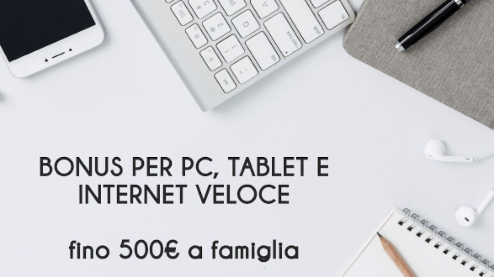

#APPROFONDIMENTI👥
⬆️📌 BONUS PC, TABLET E INTERNET VELOCE - A chi è rivolto, come fare domanda?
Si tratta di un voucher del valore massimo di 500 euro. Questa prima fase è dedicata soltanto alle famiglie con Isee fino a 20mila euro che sottoscrivono un’offerta di connessione a banda ultralarga (almeno 30 Mbps) comprensiva di un pc o tablet da acquistare. In questo caso l’incentivo di 500 euro sarà ripartito in una cifra tra i 200 e i 400 euro per coprire i costi dell’abbonamento e tra i 100 e i 300 euro per l’acquisto del dispositivo.
✅ COME RICHIEDERLO?:
- Per usufruire del bonus, i cittadini devono contattare esclusivamente, in negozio o online, uno degli operatori accreditati per l’erogazione dei servizi e sottoscrivere una delle offerte comprensive di servizio di connessione a banda ultralrga e pc o tablet presentate dalle compagnie.
- Sul sito del Comitato per la banda ultralarga (Cobul) i beneficiari possono scaricare la domanda di ammissione al contributo da presentare agli operatori in cui devono autocertificare il proprio Isee, dichiarare di non essere già in possesso di una connessione di almeno 30 Mbps e registrare i propri dati.
- Le dichiarazioni rilasciate saranno controllate a campione da Infratel Italia e dalle autorità competenti. Trattandosi di un bonus fino a esaurimento delle risorse, ripartite per regione, l’operatore controllerà l’effettiva disponibilità dei fondi e prenoterà il voucher.
- Una volta eseguiti gli accertamenti, entro 90 giorni sarà sempre l’operatore a erogare il bonus sotto forma di sconto sul canone o sul costo di attivazione e fornirà anche il computer o il tablet di cui i beneficiari diventano proprietari dopo un anno dall’attivazione del contratto.
- Le compagnie di telecomunicazioni saranno poi rimborsate direttamente da Infratel Italia.
✅ QUALI RESTRIZIONI CI SONO?
- Oltre alle restrizioni riguardo i requisiti di connettività, che prevedono l’attivazione di una sola connessione non inferiore a 30 Mbps in download e 15 Mbps in upload per unità immobiliare, alcune regioni hanno imposto limiti sui comuni in cui sarà possibile richiedere il bonus.
- Inoltre, gli utenti dovranno scegliere la connessione migliore disponibile al proprio domicilio e comunque a partire dal requisito dei 30 Mbps.
- Un altro vincolo riguarda il fatto che gli abbonamenti sottoscritti con gli operatori devono avere durata di almeno 12 mesi, salvo eventuali disservizi.
✅ INFORMAZIONI UTILI
- Oltre all’abbonamento di almeno un anno alla banda ultralarga, a cui sono destinati tra i 200 e i 400 euro del bonus, gli operatori devono anche fornire un pc o tablet da associare all’offerta, e in questo caso il bonus coprirà tra i 100 e i 300 euro della spesa sostenuta per l’acquisto del dispositivo, che diventerà di proprietà dell’utente dopo un anno.
- Come per il servizio di connettività, anche i dispositivi associabili all’offerta devono avere dei requisiti tecnici minimi. Sia i tablet sia i pc devono avere almeno processori e Cpu da 4 core con potenza di 2 Gigahertz o superiori. Tra le altre caratteristiche, i tablet devono avere 4 Gigabyte di memoria Ram o superiore, schermi con dimensioni maggiori di 10 pollici e con risoluzione Full-Hd, memoria interna 64 Gb o superiore e connettività wifi, bluetooth e usb. Per quanto riguarda i pc, invece, le caratteristiche sono almeno 8 Gb di memoria Ram, una dimensione dello schermo superiore ai 14 pollici con risoluzione Hd, memoria interna di almeno 256 Gb e anche in questo caso connettività via wifi, bluetooth e usb.
- Proprio su questo punto, dei dispositivi da associare all’offerta, non sono mancate le polemiche più accese verso la misura. Aires, l’associazione italiana retailer elettrodomestici specializzati, insieme ad Ancra e Mediaworld, ha presentato ricorso al Tar per chiedere la sospensione del bonus perché nella sua forma attuale avvantaggia gli operatori a discapito dei rivenditori di elettronica presenti sul territorio nazionale.
⬇️ COLLEGAMENTI UTILI ⬇️
Se lo desideri, iscriviti ai mie canali social per restare aggiornato ⬇️
Social MediaInoltre se hai trovato utile ed interessante questo articolo, non esitare a condividerlo, a lasciare un tuo mi piace 👍, o seguire la mia pagina Facebook per sostenermi e continuare ad informare. Grazie anticipatamente a chi vorrà farlo.